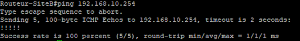
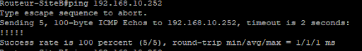
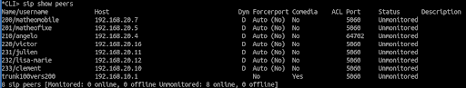
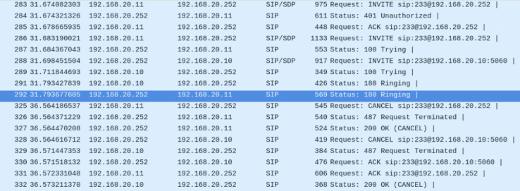

Tests et Captures de Validation
Afin de valider la conformité de l'infrastructure, plusieurs batteries de tests ont été menées sur les protocoles fondamentaux.
-
Test d'interconnexion
Validation des Ping ICMP
Les requêtes de ping de bout en bout confirment le bon fonctionnement des tables de routage OSPF et du franchissement des barrières ACL entre les différents VLANs.


-
Test VoIP / SIP
Enregistrement des Softphones
Vérification de la bonne liaison des comptes utilisateurs sur le serveur SIP Asterisk. Les requêtes REGISTER aboutissent sans perte de paquets.

-
Flux Multimédia
Établissement d'Appel
Capture du trafic lors d'une communication audio active. Le protocole RTP transporte correctement la voix sans gigue excessive détectée sur le réseau local.
